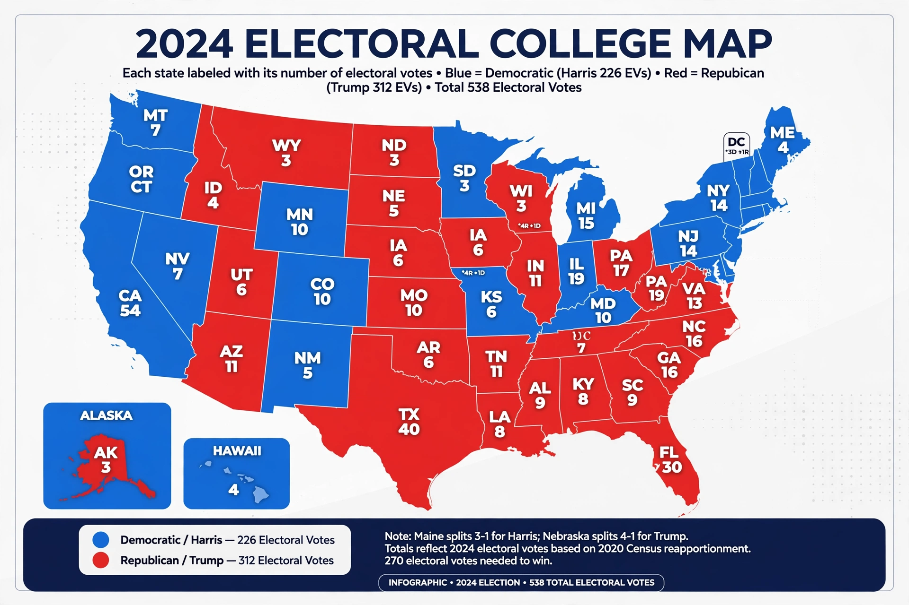

| Electoral College | |
|---|---|
| Total electors | 538 |
| Needed to win | 270 |
| Established by | U.S. Constitution, Article II |
| Amended by | Twelfth Amendment (1804); Twenty-third Amendment (1961) |
| Meeting | First Tuesday after the second Wednesday in December, in state capitals |

The United States Electoral College is the group of presidential electors that is formed every four years during the presidential election for the sole purpose of voting for the president and vice president. The process is described in Article II of the United States Constitution. The number of electoral votes exercised by each state is equal to that state's congressional delegation, the number of representatives in the House of Representatives plus its two senators in the Senate. The District of Columbia is entitled to three electors under the Twenty-third Amendment.
On Election Day, voters in each state cast ballots for a slate of electors pledged to a presidential candidate, rather than directly for the candidate. In 48 states and the District of Columbia, the winner of the statewide popular vote receives all of that jurisdiction's electors (the "winner-take-all" method); Maine and Nebraska allocate electors partly by congressional district. The electors meet in their respective state capitals in December to cast their ballots, and the votes are counted by Congress on January 6. A candidate needs an absolute majority of 270 of the 538 electoral votes to win. If no candidate reaches a majority, the House of Representatives conducts a contingent election.
Electors who vote contrary to their pledge are known as "faithless electors". Although rare and never decisive, several elections have seen faithless votes. In Chiafalo v. Washington (2020), the Supreme Court unanimously upheld state laws penalising or replacing faithless electors.
Critics note that the system can produce a president who loses the national popular vote, as occurred in 1824, 1876, 1888, 2000 and 2016, and that it concentrates campaigning in a small number of swing states. Defenders argue it preserves federalism and requires candidates to build geographically broad coalitions. Reform proposals include constitutional abolition in favour of a national popular vote, and the National Popular Vote Interstate Compact.